السلسلة 72
السيارة (صنف B) · 40 سؤال. كل سؤال فيه الصورة والصوت. اختار الجواب (ولا جوج إلا كانو صحاح)، ورك على «تأكيد» باش تشوف واش صبتي.
- 40سؤال
- 32باش تنجح
- 1 – 4جواب واحد ولا أكثر
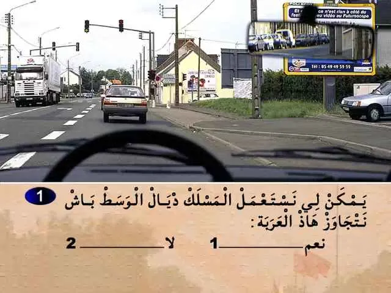
الكلافيي: 1–4 للجواب، Enter للتأكيد وللسؤال الجاي.
السلسلة 72 · النتيجة ديالك
0 / 40
السلسلة 72
السيارة (صنف B) · 40 سؤال، بالصوت، مع الجواب الصحيح والشرح.
السؤال 1
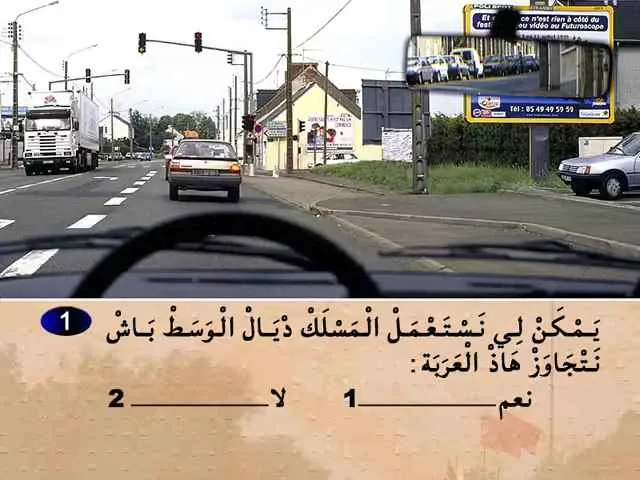
بيّن الجواب
الجواب الصحيح: 2
فهاد الحالة كما كتشوف العربة اللي قدامي غادي تدور على اليمين، كاين مسار ثاني على اليسار والخط المتقطّع كيسمح ليا نتجاوزها حيت ما كايناش شي عربة جايا من الخلف، ولكن المسار الثاني فيه سهم على الأرض كيجبّرني ندور لليسار، يعني غادي نضطر ندور لليسار إلا استعملتو. إذن خاصني ننتظر العربة اللي قدامي تدور على اليمين ومن بعد نقدر نكمل الطريق ديالي لقدام.
السؤال 2
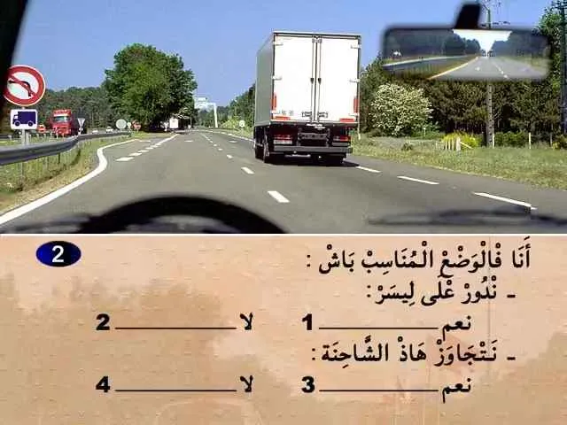
بيّن الجواب
الجواب الصحيح: 1 و 3
العلامة الطرقية العمودية كتمنع تغيير الاتجاه لليسار على الشاحنات فقط ، فهاد الحالة أنا فموقف مزيان باش ندور لليسار وكما أنني فموقف مزيان نتجاوز هاد الشاحنة وما كاين حتى حاجة كتمنعني من التجاوز حيت الطريق فيها جوج مسالك.
السؤال 3
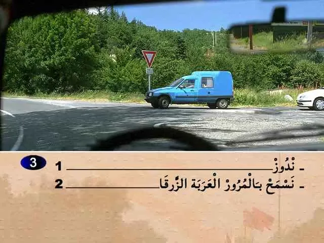
بيّن الجواب
الجواب الصحيح: 1
العربة الزرقاء عندها علامة طرقية كتشير أنها ما عندهاش حق الأسبقية وخاصها تعطيني الأسبقية باش ندوز، إذن غادي ندوز.
السؤال 4
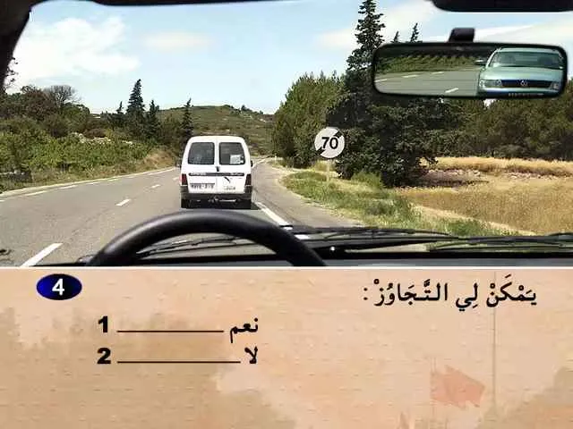
بيّن الجواب
الجواب الصحيح: 2
كاين انتهاء تحديد السرعة، كما أن الخط المتقطّع والسيارة اللي ورايا ما كتحضّرش للتجاوز، يعني الظروف موالمة، ولكن المشكل كاين فالمُنعرج وما كاينش رؤية واضحة، يعني منقدرش نعرف واش كاينة شي سيارة جاية من الجهة المقابلة، لذلك ما نقدرش نتجاوز.
السؤال 5
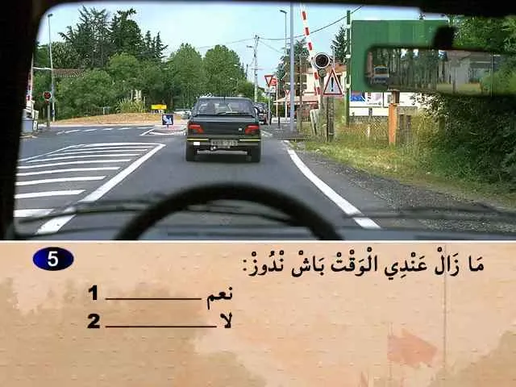
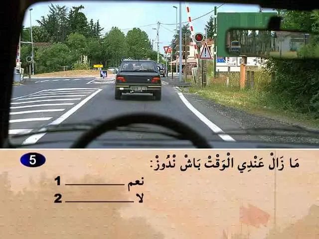
بيّن الجواب
الجواب الصحيح: 2
ما عنديش الوقت ندوز، حيت الإشارة غادي تولي حمرا وخاصنا نوقفو.
السؤال 6
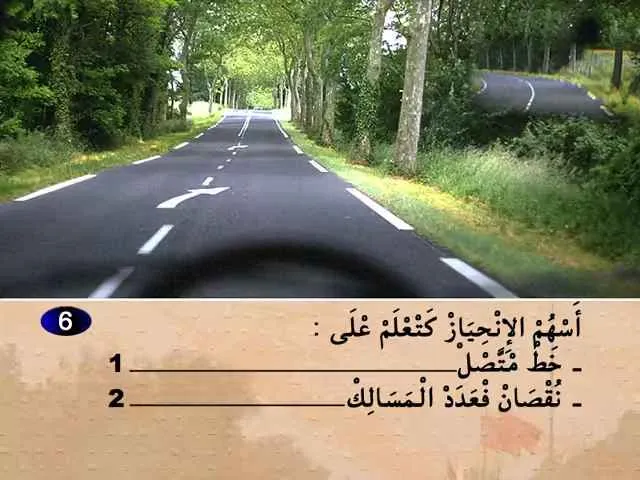
بيّن الجواب
الجواب الصحيح: 1
بالنسبة للأسهم المرسومة على الأرض فهي كتعني ان الخط غادي يولي متصل.
السؤال 7
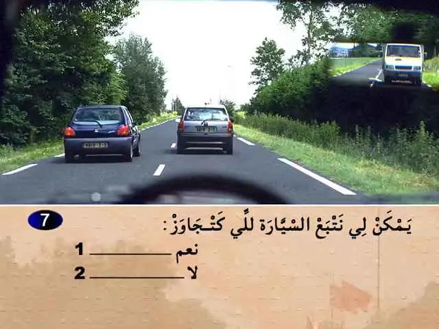
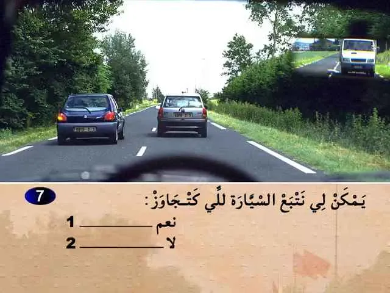
بيّن الجواب
الجواب الصحيح: 2
في طريق وطنية أو طريق ذات اتجاهين، ما نقدرش نتبع سيارة أخرى كتقوم بعملية التجاوز (عكس الطريق السّيّار او طريق ذات اتجاه واحد).
السؤال 8
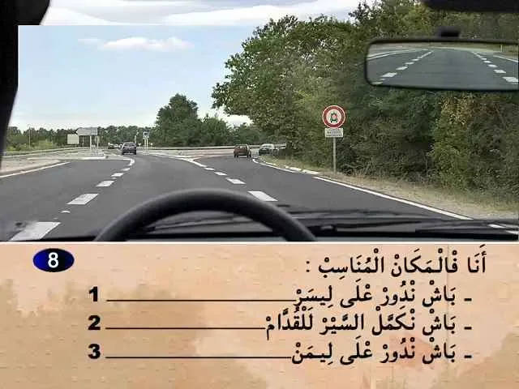
بيّن الجواب
الجواب الصحيح: 2
الطريق اللي واقف فيها دابا هي ديال السيارات اللي باغين يكملو الطريق لقدام. (الطريق اللي على اليمين خاصة بالعربات اللي باغية تدور لليمين، والطريق اللي على اليسار خاصة بالعربات اللي باغية تدور لليسار).
السؤال 9
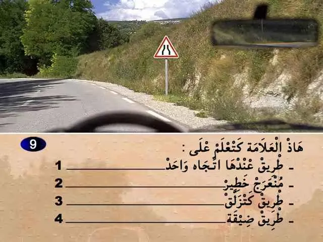
بيّن الجواب
الجواب الصحيح: 4
العلامة الطرقية كتشير لخطر على بعد 150 متر وكتعني أن الطريق ضيقة.
السؤال 10
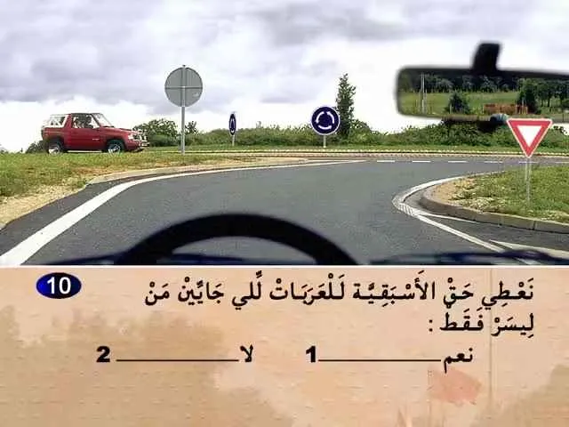
بيّن الجواب
الجواب الصحيح: 1
في الرومبوان، نعطي الأسبقية للعربات الجاية من الجهة اليسرى فقط. (عكس ملتقى الطرق).
السؤال 11
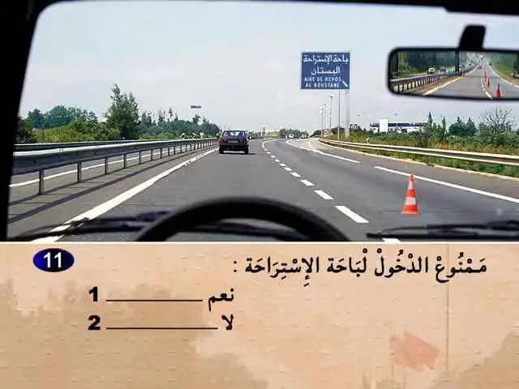
بيّن الجواب
الجواب الصحيح: 2
الدخول لباحة الاستراحة غير ممنوع، الصورة كتشير أنه كانت أعمال منعتني من الدخول من قبل، لكن دابا عندي الوقت الكافي نقدر ندخل وما كايناش شي سيارة من ورايا، إذن يمكنني الدخول لباحة الاستراحة.
السؤال 12
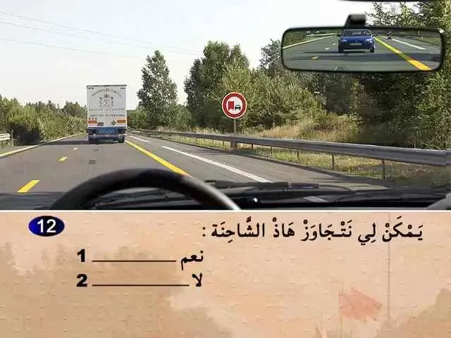
بيّن الجواب
الجواب الصحيح: 1
إلا كان الخط المتصل على أقصى اليسار فهاد كيعني أن الطريق ذات اتجاه واحد، وفي هاد الحالة نقدر نتجاوز حتى مع انعدام الرؤية حيت ما كايناش سيارات جاية من الجهة المقابلة، العلامة الطرقية العمودية كتمنع التجاوز بالنسبة للشاحنات ماشي للسيارات.
السؤال 13
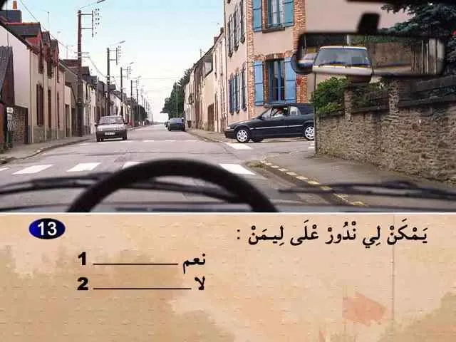
بيّن الجواب
الجواب الصحيح: 1
نحن في ملتقى الطرق، إذا بغيت ندور لليمين نقدر، الخط المتصل اللي واقفة عنده السيارة يعني عندها علامة قف وهو غير مكتمل على طول الطريق، هذا كيعني نقدر ندور لليمين. إلا كان الخط متصل على طول الطريق فهاد الحالة ما نقدرش ندور لليمين حيت الطريق غادي تكون ذات اتجاه واحد.
السؤال 14
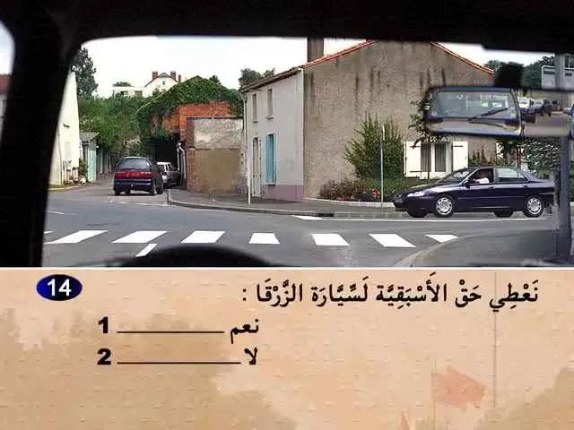
بيّن الجواب
الجواب الصحيح: 2
في ملتقى الطرق، الأسبقية دائما للعربات الجاية من اليمين، لكن إذا كاينة علامة قف للعربات اللي على اليمين كتكون عندي الأسبقية. كاينة علامة قف للعربة اللي على اليمين، وأيضا خط أفقي مرسوم على الأرض يعني عندها علامة قف، إذن ما نعطيش الأسبقية للسيارة الزرقاء.
السؤال 15
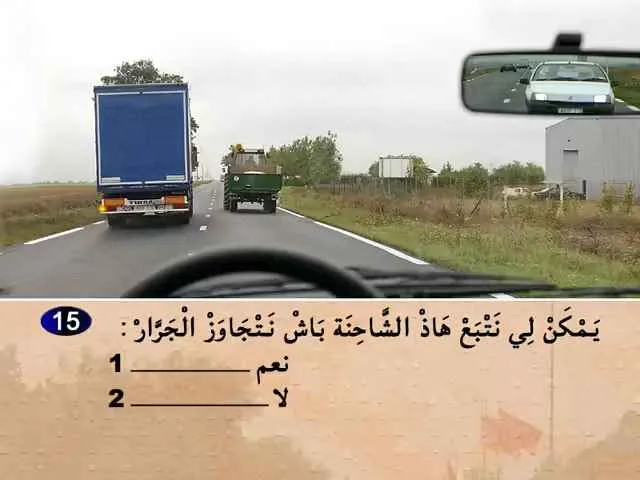
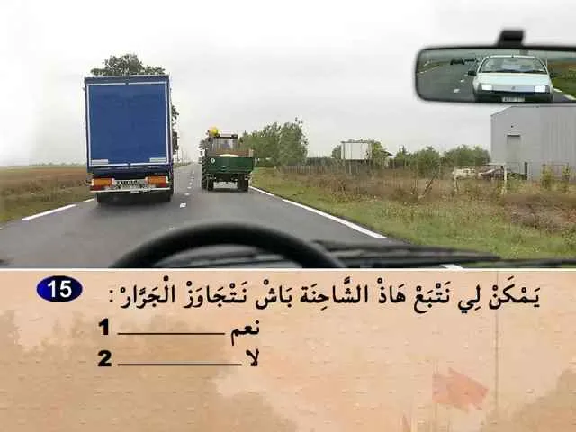
بيّن الجواب
الجواب الصحيح: 2
في طريق وطنية أو طريق ذات اتجاهين، ما نقدرش نتبع الشاحنة اللي كتقوم بالتجاوز، خاص نتسنا باش نتجاوز.
السؤال 16
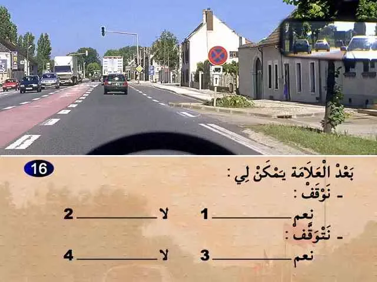
بيّن الجواب
الجواب الصحيح: 1 و 3
العلامة الطرقية العمودية تعني منع الوقوف والتوقف، وعندها علامة تكميلية ديال شاحنة، إذن المنع خاص بالوقوف والتوقف كيخص الشاحنات ماشي السيارات. إذن بعد العلامة نقدر نوقف ونتوقف.
السؤال 17
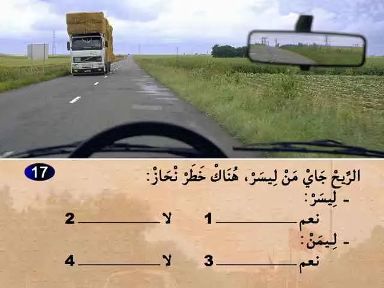
بيّن الجواب
الجواب الصحيح: 1 و 3
الرياح كتجي من الجهتين اليمنى واليسرى ماشي من جهة واحدة، لذلك كاين خطر الانحياز لليسار وأيضا لليمين.
السؤال 18
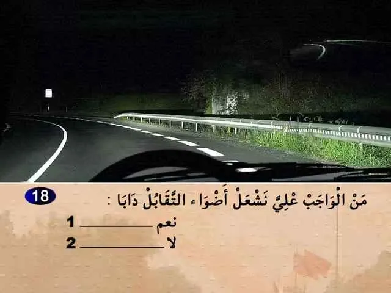
بيّن الجواب
الجواب الصحيح: 2
نقدر نشعل أضواء التقابل في المنعرج ولكن بما أن المنعرج سالا (الحاجز الحديدي على اليمين كيبين انه سالا) ما خاصنيش نشعل أضواء التقابل دابا.
السؤال 19
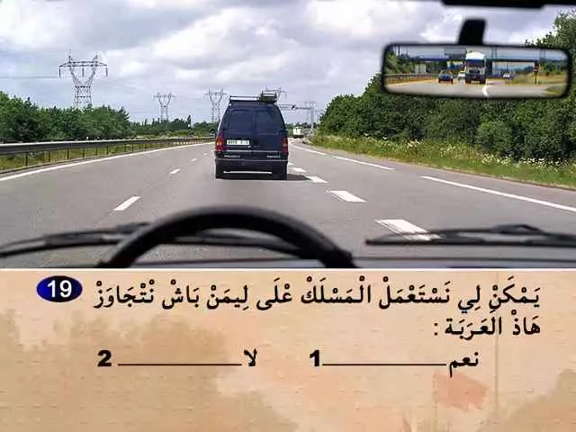
بيّن الجواب
الجواب الصحيح: 2
الطريق اللي على اليمين خاصة بالعربات البطيئة مثل الجرار أو الشاحنات اللي كتمشي ب 60 كلم في الساعة، الخط المتقطع عريض، كما أن التجاوز من الجهة اليمنى ممنوع، التجاوز كنديروه من الجهة اليسرى.
السؤال 20
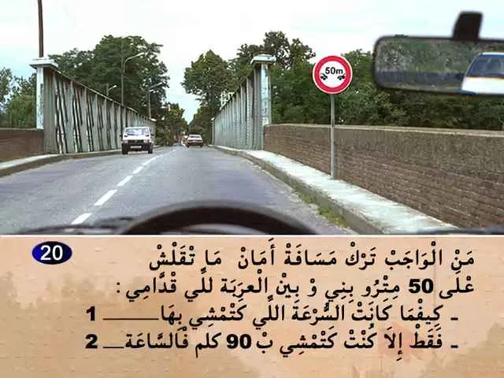
بيّن الجواب
الجواب الصحيح: 1
العلامة الطرقية العمودية تعني المنع وكتطبق من عند العلامة، تعني الإجبار على ترك مسافة أمان لا تقل عن 50 متر بيني وبين العربة اللي قدامي مهما كانت السرعة.
السؤال 21
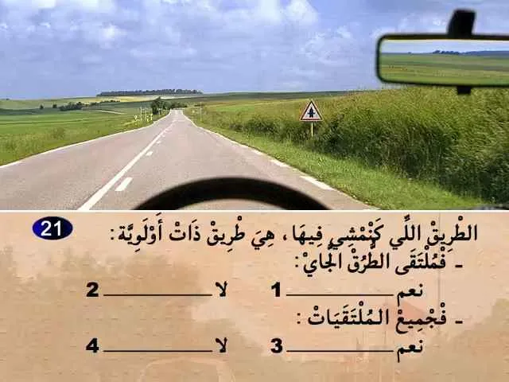
بيّن الجواب
الجواب الصحيح: 1 و 4
العلامة الطرقية تعني عندي حق الأسبقية فالطريق اللي غادي فيها ولكن فقط في ملتقى الطرق الجاي ماشي فكل ملتقيات الطرق.
السؤال 22
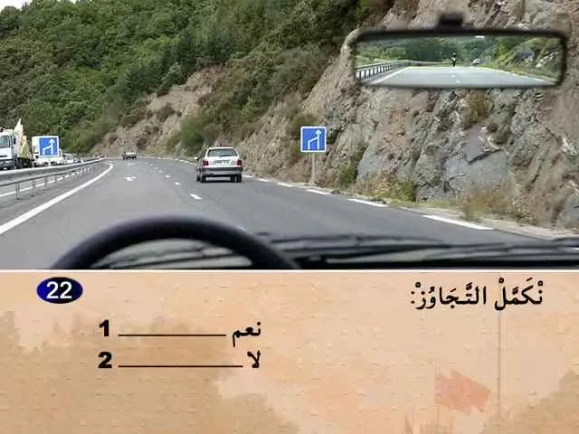
بيّن الجواب
الجواب الصحيح: 2
في هاد الحالة ما نقدرش نكمل التجاوز خاصني ندخل للطريق اللي على اليمين، حيت كاين تشوير أفقي مرسوم على الأرض، الأسهم كتجبرني ندخل لليمين حيت كتعلم بقرب الخط المتصل وكاين تشوير عمودي كيشير لنقصان عدد المسالك. لذلك ما نقدرش نكمل التجاوز.
السؤال 23
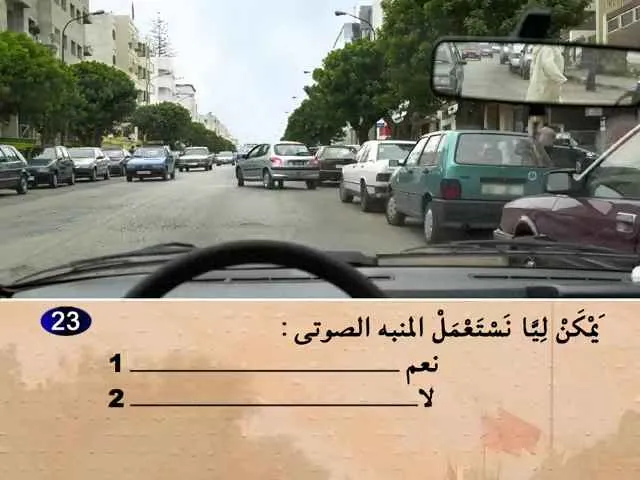
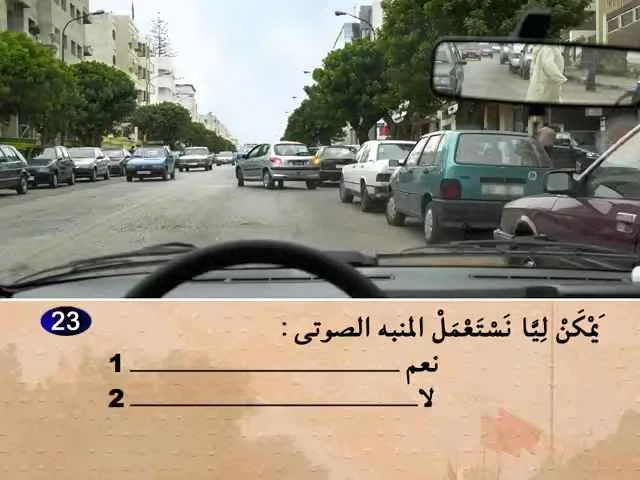
بيّن الجواب
الجواب الصحيح: 2
داخل المدينة القانون كمنع استعمال المنبه الصوتي إلا للضرورة وفي حالة الخطر، في هاد الحالة ما كاينش خطر، لذلك ما كاينش داعي لاستعمال المنبه الصوتي.
السؤال 24
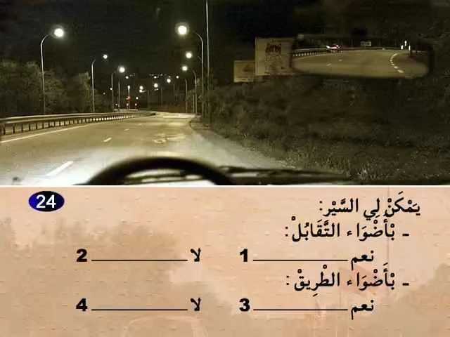
بيّن الجواب
الجواب الصحيح: 1 و 4
في المدينة من الواجب نسوق بأضواء التقابل، لكن ممنوع نستعمل أضواء الطريق.
السؤال 25
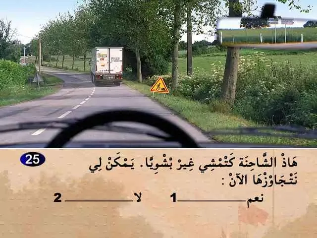
بيّن الجواب
الجواب الصحيح: 2
رغم أن الشاحنة كتمشي ببطء والخط المتقطع كيسمح لينا بالتجاوز، ما نقدرش نتجاوز الشاحنة حيت كاينة علامة عمودية كتشير لوجود أشغال لذلك خاصني نقص السرعة وناخد الحيطة حيت ما نعرفوش شنو غادي نلقى من أشغال فطريق.
السؤال 26
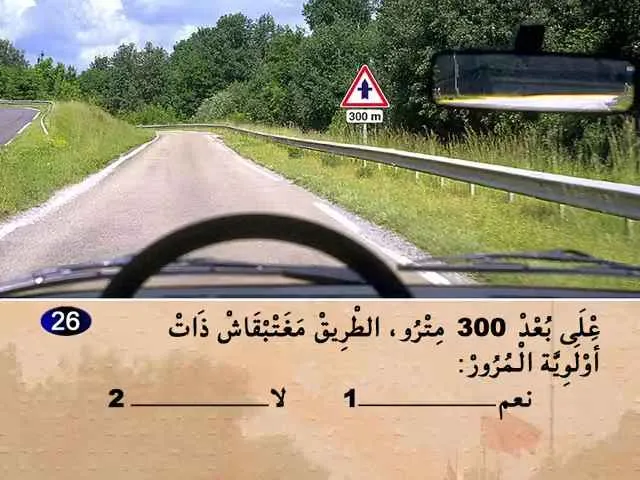
بيّن الجواب
الجواب الصحيح: 2
العلامة الطرقية كتعني أنه بعد 300 متر الطريق غادي تولي ذات أولوية بالنسبة لي كسائق.
السؤال 27
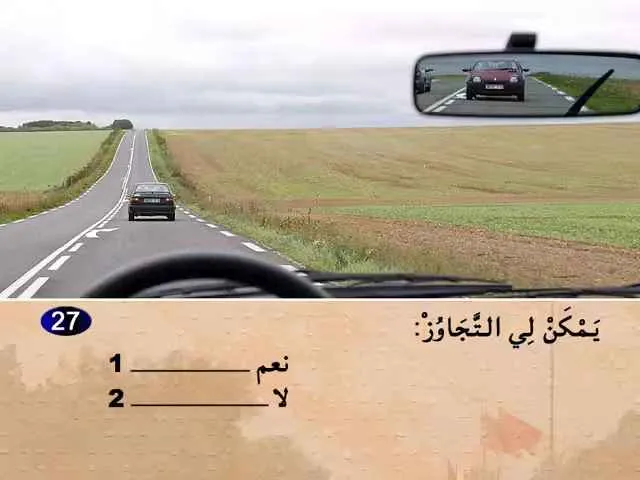
بيّن الجواب
الجواب الصحيح: 2
الأسهم المرسومة على الأرض تعني الانحياز لليمين اللي بدورها تعني أن الخط المتقطع غادي يولّي متصل بعد شوية، لذلك ما نقدرش نتجاوز.
السؤال 28
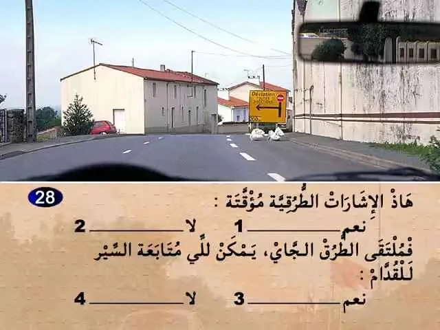
بيّن الجواب
الجواب الصحيح: 1 و 4
العلامات الطرقية اللي باللون الأصفر كتعني أنها مؤقتة، فالعلامة الطرقية هنا كتعني أنه فملتقى الطرق الجاي ما نقدرش نكمل للسير للأمام وخاصني ندور لليسار.
السؤال 29
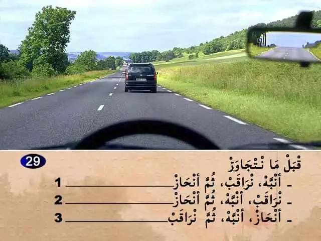
بيّن الجواب
الجواب الصحيح: 2
أول حاجة كنديرها قبل التجاوز هي مراقبة الطريق واش كاينة شي سيارة كتجاوزني، واش التشوير الطرقي كيسمح ليا بالتجاوز واش كاينة شي سيارات جاية من الجهة المقابلة، من بعد كندير تنبيه للسيارة اللي بغيت نتجاوز يا إما تنبيه ضوئي أو صوتي، ومن بعد كنبدا عملية التجاوز. الإجابة الصحيحة رقم 2.
السؤال 30
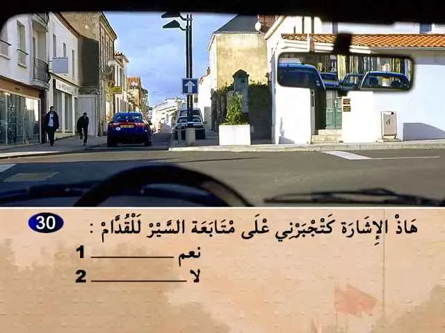
بيّن الجواب
الجواب الصحيح: 2
نقدر ندور لليمين إلا بغيت، هاد العلامة الطرقية ما كتعنيش الإجبار ولكنها كتعني أن الطريق ذات اتجاه واحد. إذن العلامة الطرقية ما كتجبرنيش نكمل للسير للأمام.
السؤال 31
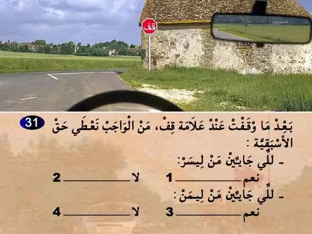
بيّن الجواب
الجواب الصحيح: 1 و 3
علامة قف كتعني الوقوف الإجباري وإعطاء الأسبقية للعربات الجاية من اليمين واليسار.
السؤال 32
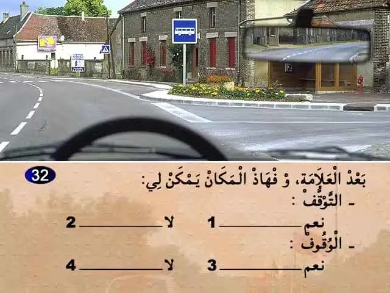
بيّن الجواب
الجواب الصحيح: 2 و 4
العلامة الطرقية الخاصة بالنقل كتشير لمكان خاص بالنقل، وفي هاد الأماكن ما نقدرش نوقف ولا نتوقف.
السؤال 33
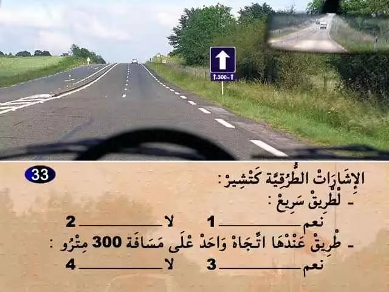
بيّن الجواب
الجواب الصحيح: 2 و 3
العلامة الطرقية كتعني أن الطريق غادي تولي ذات اتجاه واحد على بعد 300 متر وماشي طريق سريع.
السؤال 34
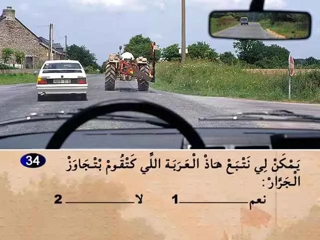
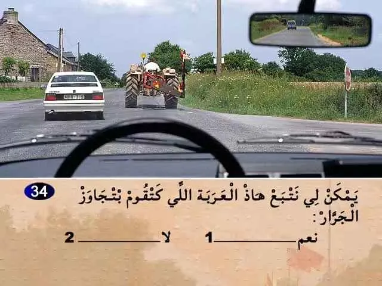
بيّن الجواب
الجواب الصحيح: 2
فملتقى الطرق، ممنوع التجاوز، والحاجة الثانية هي انه فطريق ذات اتجاهين ما نقدرش نتبع عربة كتقوم بالتجاوز إذن ما نقدرش نتبع هاد العربة، خاص نتسنى باش نتجاوز.
السؤال 35
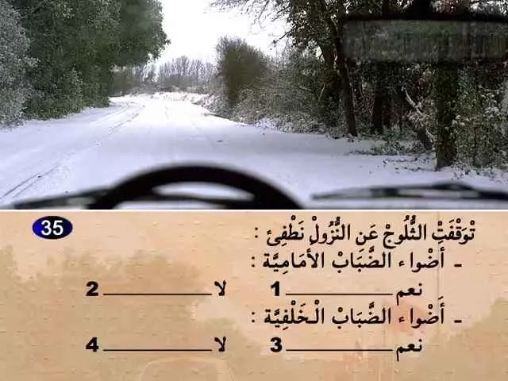
بيّن الجواب
الجواب الصحيح: 1 و 3
إلا توقفت الثلوج عن الهطول نقدر نطفى أضواء الضباب الأمامية والخلفية.
السؤال 36
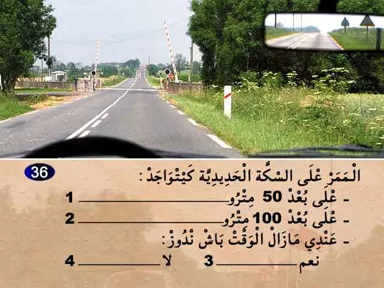
بيّن الجواب
الجواب الصحيح: 1 و 4
إلا كانت الصوى فيها خط أحمر واحد كتعني على بعد 50 متر (كل خط كيعني 50 متر)، والإشارة الضوئية حمراء إذن ما عنديش الوقت للمرور.
السؤال 37
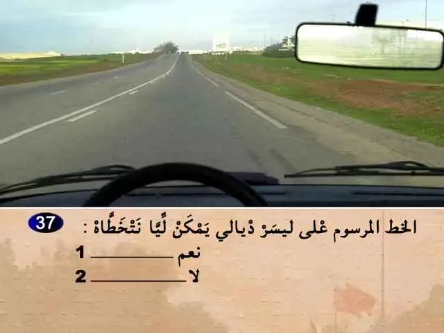
بيّن الجواب
الجواب الصحيح: 1
كاين جوج خطوط على اليسار، ودائما الخط اللي من جيهتنا، الخط لي من جيهتنا متقطع والخط في الجهة الاخرى متصل، الخط المتقطع يعني نقدر نتخطاه ما عنديش مشكل، والخط المتصل خاص بالعربات الجاية من الاتجاه المعاكس.
السؤال 38
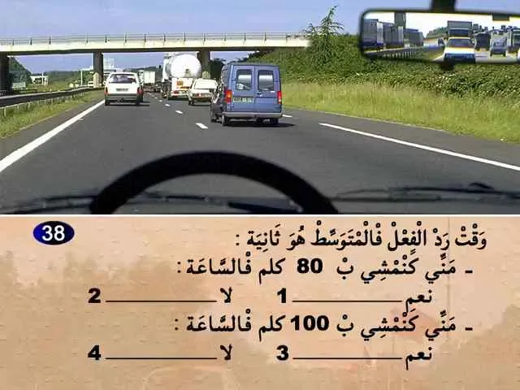
بيّن الجواب
الجواب الصحيح: 1 و 3
بالنسبة لوقت رد الفعل المتوسط كيتقدر بواحدة ثانية مهما كانت السرعة.
السؤال 39
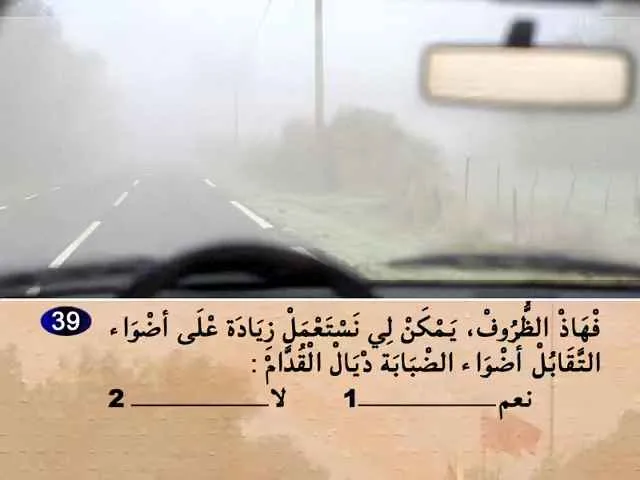
بيّن الجواب
الجواب الصحيح: 1
كاين ضباب فالطريق، نستعمل أضواء التقابل والضباب الأمامية والخلفية.
السؤال 40
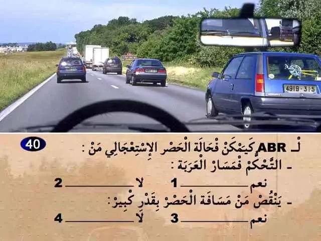
بيّن الجواب
الجواب الصحيح: 1 و 4
ABS خاصية فالعربة كتساعد فالحصر الاستعجالي باش نتحكم فمسار العربة بشكل أفضل، وما عندهاش علاقة بإنقاص مسافة الحصر. الإجابة الصحيحة 1 و 4.